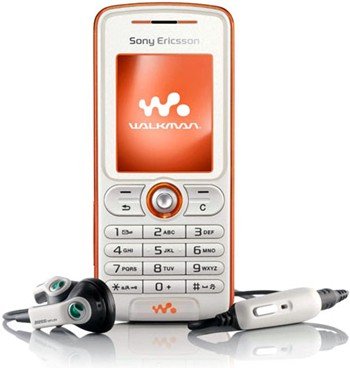

Recenzia smartfónu Sony Ericsson W200i

Základné parametre
konštrukcia: klasická,
OS: vlastný,
frekvencie: 900/1800/1900 MHz,
rozmery: 101 x 44 x 18 mm,
hmotnosť: 85 gramov (zistená: 83 g),
displej: pasívny, 128 x 160 b., 65 536 farieb, 28 x 35 mm, uhlopriečka 44 mm,
fotoaparát: VGA (640 x 480 b.), záznam videí (176 x 144 b.)
pamäť: 27 MB + 128 MB karta MS Micro,
správy: SMS, EMS, MMS, CB, e-mail, RSS (java), instant messaging,
globálny prenos dát: GPRS 4+2,
lokálny prenos dát: IrDA, Fast port, mass storage,
hudba: MP3/AAC/eAAC/eAAC+ prehrávač Walkman 1.0, 3,5 mm jack (adaptér v balení), FM rádio s RDS,
ostatné: Java 2.0, WAP/HTML, synchronizácia,
batéria: BST-36, 780 mAh,
výdrž: do 7 h hovoru/360 h pohotovosti/18 h hudby,
SAR: 0,81 W/kg (norma 2 W/kg)
Nepodporuje/neponúka:
aktívny pohotovostný režim, blesk, makro, autofocus, kryt fotoaparátu, EDGE, UMTS, HSDPA, Bluetooth, Wi-Fi, prehliadač dokumentov.
V balení nájdete aj USB kábel DCU-60, 128 MB kartu Memory Stick Micro a slúchadlá HPM-64(s podporou Bass Reflex).
Pekná verzia lacného Walkmanu od Sony Ericssonu. Myslím, že úspešný model W300i má pekného súrodenca v podobe mobilu klasickej konštrukcie za "pár korún" (odhad 5 490 - 5 990 Sk). Predstavte si K310i (teda low-end bez Bluetooth), pridajte atraktívne farby, FM rádio s RDS, podporu pamäťových kariet, kvalitné slúchadlá a máte v ruke kvalitný plnohodnotný mobil na všetky základné operácie a počúvanie hudby po ceste do školy alebo práce.
Doma pomocou kábla prenesiete na 128 MB kartu 1 - 2 albumy skladieb vo formáte MP3 (AAC) a na druhý deň máte po ceste do zamestnania o zábavu postarané.
Spracovanie je dobré, dizajnom pripomína W800i. Škoda použitia joysticku, ktorý sa zvykne často kaziť zanášaním prachu. V pravej stene je dvojité tlačidlo na reguláciu hlasitosti, hore vypínač s prepínaním profilov. Vľavo hore nájdete Walkman tlačidlo, ktorým spustíte prehrávač hudby. Prehrávač je typu Walkman 1.0, na domácom displeji nevidíte ani názov skladby či interpreta, ani FM stanice. Pri zablokovanej klávesnici nie je možné zapnúť a vypnúť prehrávač hudby, ale regulácia hlasitosti funguje (alebo preskakovanie skladieb podržaním ovládača hlasitosti). Na počúvanie hudby do školy či práce je W200i ideálny spoločník. FM rádio ponúka aj RDS, teda rozpoznávanie názvu počúvanej frekvencie.
V balení nájdete aj USB kábel, ktorý podporuje jednoduchý prenos súborov medzi kartou a PC.
Dodávané slúchadlá HPM-64 ma milo prekvapili. Sú síce zdanlivo obyčajné, ale potešia najmä milovníkov "silných basov". Prehrávaču nechýba ani ekvalizér s položkou Mega bass.
Internetový prehliadač je očividne vyvinutý NetFront-om, ponúka aj zoom a ďalšie možnosti.
Správca súborov ponúka pohodlnú prácu s hudbou, videami či obrázkami v telefóne i na karte.
Fotoaparát je úplne bežný, poslúži na posielanie fotiek a videí cez MMS alebo e-maily.
Organizačné funkcie sú štandardné, od kalendára, cez budík až po pamäť kódov a hesiel.
Výhody:
- obsah balenia,
- hudobné funkcie.
Nevýhody:
- slabé rozlíšenie displeja,
- chýba Bluetooth.
Záver
W200-ku som používal ako vedľajší mobil, ale pochváliť musím jeho hudobné možnosti aj výdrž. Malý displej je šetrný ku batérii a Sony Ericsson je známy dobrým využívaním energie v telefónoch. W200i ponúka kvalitné slúchadlá v balení, 128 MB kartu aj USB kábel. To je tiež výnimočná výbava. Za odhadovanú cenu do 6 000 Sk máte maličký, ale plnohodnotný Walkman a mobil v jednom. Verím, že sa objaví aj v akciových ponukách mobilných operátorov.
*Tato recenzia je podla stranky fony.sk